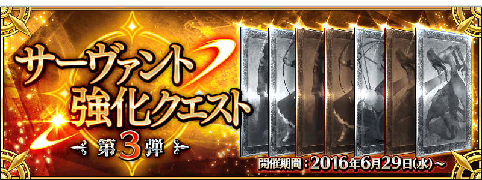

更新履歷 ★☆★因官方變更加密方式，新Servant與概念禮裝的圖片尚無法取得 ★☆★引用本站的翻譯請註明本站名稱或網址 本站不像其他網站可以分工合作統整資料 而是獨自一人憑藉熱忱製作分享 引用本站的翻譯請註明本站名稱或網址 6/24【來自迦勒底廣報局】關於7月上旬～中旬的遊戲更新 6/28【重要】Ver.1.11.0以後，關於從推薦環境以外的遊玩 6/29「600萬DL突破宣傳活動」＆「Servant強化關卡 第3彈」  ・6/29定期維修(13:00實施) ◆Servant◆ ・新增技能解放 7/1追加→ ・一部份Servant的絆Lv.上限從Lv.5變更至Lv.10 ◆概念禮裝◆ ・新增概念禮裝 @fgoproject 發送的推文